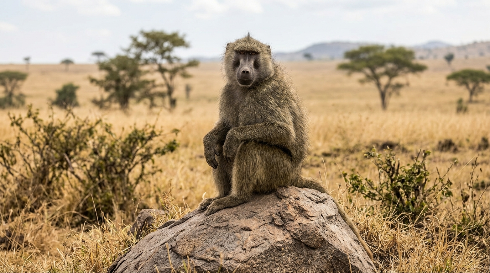
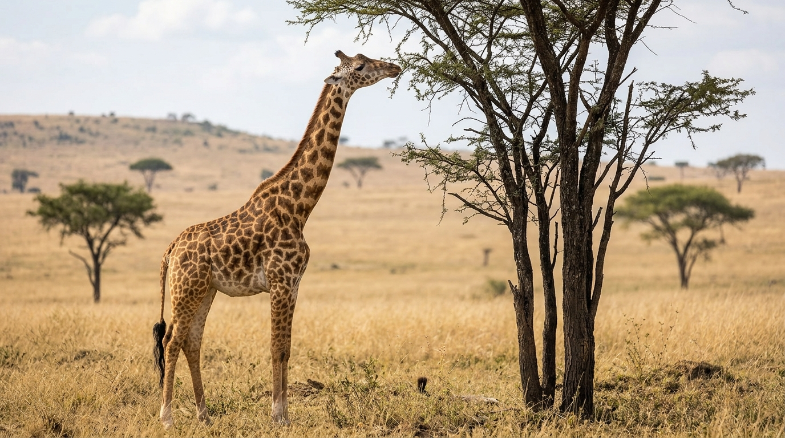
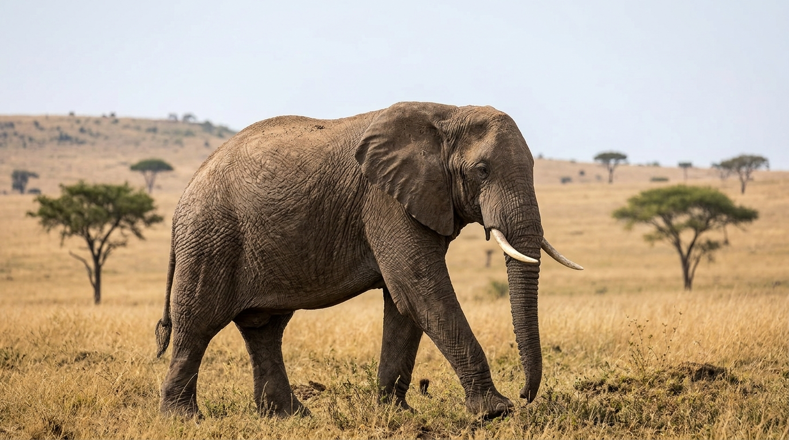
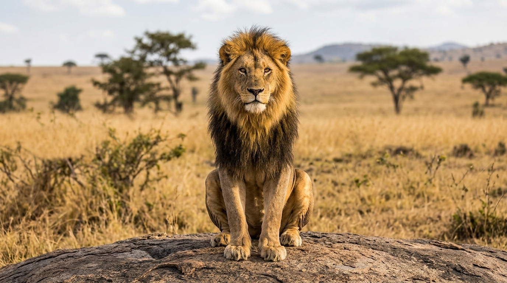

Le singe est un mammifère de la famille des primates, reconnu pour son agilité et sa capacité à grimper aux arbres avec facilité.

La girafe est un animal emblématique de la savane africaine doté d'un long cou et de grandes jambes, présenté comme le plus grand animal terrestre existant.

L'éléphant est le plus grand mammifère terrestre vivant, caractérisé par sa taille imposante, ses défenses et sa trompe flexible.

Le lion est un grand félin souvent appelé « roi de la jungle », remarquable par sa crinière majestueuse et sa force impressionnante.